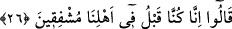
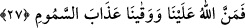

cevap alması gibi değil, herkesin değişik kişilerle sohbete dalıp haz alma tarzında bir
konuşma cereyan etmesi içindir.
26. Derler ki: «Daha önce biz, aile çevremiz içinde bile (ilâhî azaptan)
korkardık.»
Hakikatte kendilerine soru sorulan her bir kimse “daha önce” yâni cennete girmeden
önce “biz, âilemiz içinde iken bile” kalp rikkati ile Allah Teâlâ’ya isyandan dolayı
“(ilâhî azaptan) korkardık.” O’na tâate önem verirdik. Veya sonumuzdan korkardık.
Sa’di Müftî der ki: Nasıl ki “Biz bundan önce yalnız O’na yalvarırdık...” (et-Tur
52/28) âyeti Allah Teâlânın emrini tâzime bir işâret ise, içinde müşfikîn kelimesinin
geçtiği bu âyet de Allah’ın mahlûkatına şefkat etme mânâsına işâret etmeye en lâyık bir
cümle sayılabilir. Bu âyet daha önceki âyeti beyân mâhiyetinde olup her iki âyetin mânâ
olarak birbirinden farklı olmadığını mutlak sûrette ve mübâlağa gayesiyle serdettiği için
atıf edâtı almaksızın getirilmiştir.
Fakir (Bursevî) derim ki; zâhir olan bu kelâmın, insanlar arasında yaygın örfe göre
“bizim kabilemiz içindeki durumumuz budur” anlamında olmasıdır. Binâenaleyh onlar
dünyada kabile ve aşiretleri içerisinde merhamet vasfı üzeredirler. Ayrıca âyet-i
kerîmede onlardan bazılarının bu merhamet vasfıyla müzeyyen olmadığı için cennetten
mahrum olacaklarına dâir kinâye vardır. Bunun delili olarak da İbnu’l-Melek’in
Şerhu’l-Meşârık’ında “ehl” kelimesinin ezvâc, evlâd, köle, câriye, akraba, arkadaş ve
bunların tamamı olarak tefsir edilmiş olmasını gösterebiliriz.
27. «Allah bize lütfetti de bizi vücudun içine işleyen azaptan korudu.»
“Allah bize” rahmeti ve Hakk’a tevfîki ile “lûtfetti de” nimetlendirdi de. Âcizane
olarak ben derim ki; âyetin devamındaki “bizi vücûdun içine işleyen azaptan korudu”
kavlinin de delâlet ettiği gibi ihsân ve in’amdan zâhir olan maksad, bunun cennetle ve
onun nimetleriyle oluşudur.
“Bizi vücudun içine işleyen azaptan korudu.” Yâni bizi burun deliği, ağız ve kulak
gibi vücudun delikçiklerine kavurucu bir etkiyle giren ve sıcak bir rüzgârdan oluşan
azab-ı cehennemden korudu. “Semûm” kavurucu samyeline teşbihle sıcaklığının insana
tesiri sebebiyle cehennem mânâsı üzerine itlak olunmuştur. Müfredât’da “semûm”
kelimesinin mânâsı, zehir gibi bir etki bırakan yakıcı rüzgâr olarak belirtilmiştir.